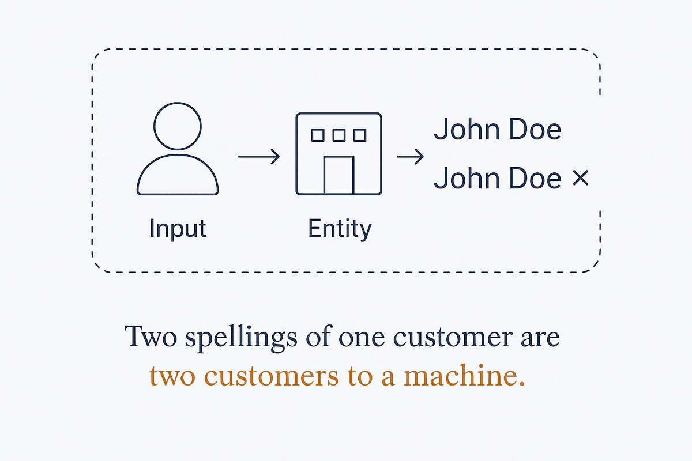

Two spellings of the same customer are two customers to a machine. Every graph, every join and every count is wrong until identity is settled.

Apple, Apple Inc. and AAPL are one company to a reader and three nodes to a system. Until something decides they are the same thing, every downstream operation inherits the error: the graph has three partial neighbourhoods instead of one complete one, the aggregate triple-counts, and retrieval returns whichever spelling happens to match the query. Identity resolution is not a cleanup step — it is the precondition for anything else being true.
The reason it gets skipped is that it looks like tidying and behaves like modelling. Deciding that two records are the same entity requires knowing which attributes are identifying, which are incidental, how much disagreement is tolerable, and what to do with near-matches that might be a merge or might be two genuinely different people with the same name. Those are judgements about the domain, and getting them wrong in either direction is costly: over-merge and you fuse two customers into one; under-merge and you never see the whole relationship.
This is also where automated graph-building most often produces confident nonsense. Extraction from documents yields entities per document; without resolution across documents you get a graph that looks impressively dense and encodes the same real-world thing a dozen times over. The structure is real, the identity is not, and every path traced through it may be crossing between things that were never the same.
The practical discipline is unglamorous and familiar from data work: canonical identifiers, explicit alias tables, deterministic matching where possible, probabilistic matching where necessary — with the threshold recorded rather than implied. And a human decision on the ambiguous middle, because the cases that fall between the rules are precisely the ones where a wrong automatic answer propagates furthest.